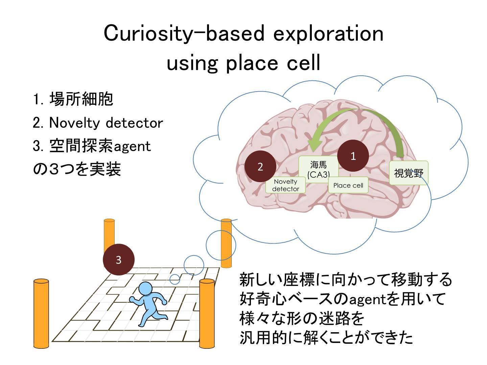
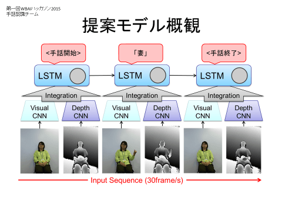
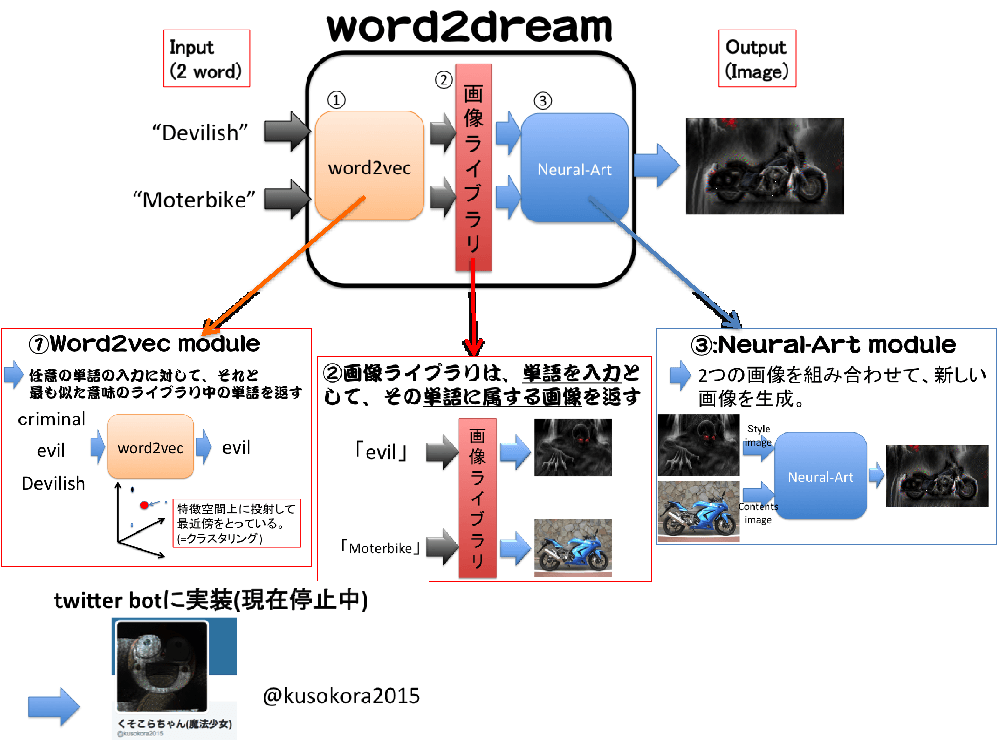
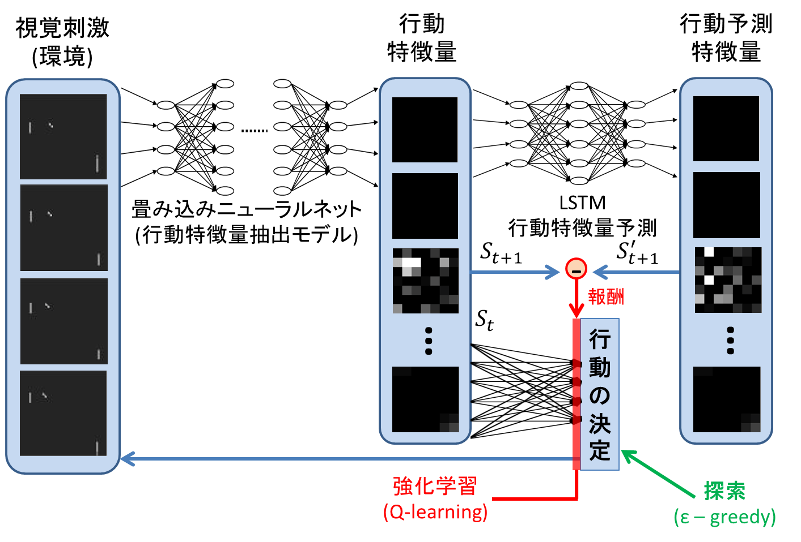
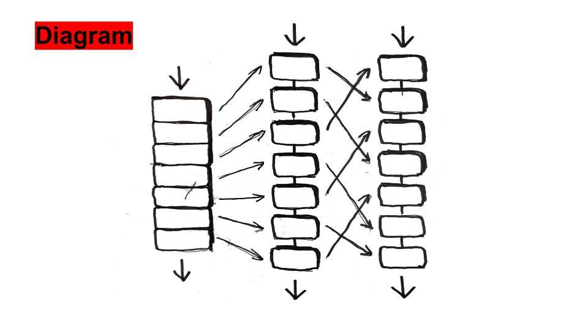
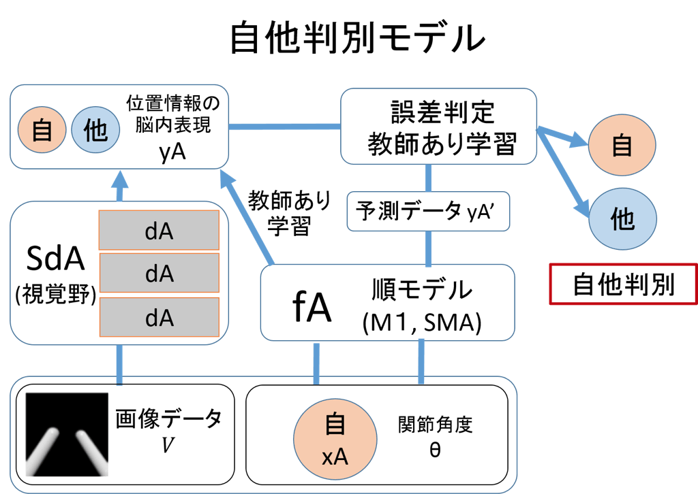

第1回WBAIハッカソン活動報告
第1回全脳アーキテクチャハッカソンは，汎用人工知能の開発という大きな目標に向かう第一歩として今年9月に開催されました.
本ハッカソンの課題は「複合学習器の開発」，つまり複数の機械学習器を結合した学習器の開発です. この課題は「脳はそれぞれよく定義された機能を持つ機械学習器が一定のやり方で組み合わされる事で機能を実現しており，それを真似て人工的に構成された機械学習器を組み合わせる事で，人間並みかそれ以上の能力を持つ汎用の知能機械を構築可能である」という全脳アーキテクチャ中心仮説に基づいて設定されたものです. アイデアソン枠では大学生・大学院生を中心とした7チームが参加し，各チームには1-2人のメンターが付いて技術的・学術的なサポートを行いました. 5日間の合宿形式を取った本ハッカソンは，計算論的神経科学や機械学習に興味を持つ学生・研究者のネットワークづくりにも役立ちました.
各チームが各々の実装と，その学習器の神経科学的妥当性の検討を行い，最終日に発表しました. 発表後は活発な議論と講評・表彰が行われ，大変有意義な時間となりました.各チームの成果の詳細は，ハッカソンの動画と共に以下をご覧ください. (文責：土井ゆりか)
開催概要
開催期間 : 2015年9月19日から5日間
開催場所 : 慶應義塾大学日吉キャンパス
主催 : NPO 全脳アーキテクチャー・イニシアティブ（WBAI），全脳アーキテクチャ若手の会
協賛 : 産総研人工知能研究センター，電通大，アルパカ
後援 : ドワンゴ人工知能研究所，ドワンゴ
参加チーム
- 伊藤チーム : 伊藤健史(北海道大)・浮田純平(東京大)・加藤郁佳(東京大) 『場所細胞を用いた新奇刺激探索型エージェントの実装』
- 土井チーム : 土井ゆりか(東京大)・八木拓真(東京工業大)・水口智仁(慶應大) 『CNN-LSTMを用いた手話認識システムの開発』
- 都築チーム : 都築拓(大阪大)・草野仁志(大阪大)・森賀新(大阪大) 『Word2dreamによる概念の合成』
- 西田チーム : 西田圭吾(大阪大)・玉城貴也(同志社大)・田村陵大(同志社大)・三浦拓也(大阪大) 『テレビゲームを用いた見まね学習の比較』
- 中村チーム : 中村健太郎(慶應大)・板谷琴音(慶應大)・深澤風土(慶應大)・渡邉麗(慶應大) 『深層学習器の解体再構築』
- 廣芝チーム : 廣芝和之(NAIST)・Juan Lorenzo Hagad(大阪大)・南宇人(大阪大)・本谷康平(大阪大) 『鏡像自己認識機構の獲得』
- Paavo Params(OIST) 『State-space reduction for model-based reinforcement learning using auto-encoders』
【優勝】
伊藤チーム : 伊藤健史(北海道大)・浮田純平(東京大)・加藤郁佳(東京大)
『Curiosity based exploration using place cell/ 場所細胞を用いた新奇刺激探索型エージェントの実装』
今回のハッカソンで、我々のチームは「環境内で自己の位置を認識する機械学習器」と、これを用いて「到達したことがない座標を探索することで効率的に迷路を解くアルゴリズム」を提案・実装した。
自己位置認識モジュールは、生体脳の海馬に存在する場所細胞（2014年ノーベル医学生理学賞）の機能に着想を得て、視覚情報と自己の移動履歴を経時的に入力し、場所の表象を獲得できるリカレントニューラルネットワークとして実装した。この中で、現在得られている感覚刺激と自己の行動に関する情報から、次の瞬間に得られるであろう感覚刺激を予測させるというLSTMの一般的な訓練方法を提案した。この方法を用いることによって、場所細胞に限らず、発達期における様々な高次機能の学習過程をシミュレーションできる可能性を示した。
迷路探索アルゴリズムは、エージェントに上述の場所細胞モジュールをもたせることで自己位置を認識させ、現在位置から3手以内に到達可能な未到達マスの数が多い方へ進むように実装した。この先読み過程は、生体脳では生体がこれから移動しようとしている座標に相当する場所細胞が発火するというpreplayの概念に着想を得ている。このアルゴリズムによって、いかなる形状の迷路においても平均的に優れた効率でゴールに到達できるエージェントを実装できた。新規性指向型の探索アルゴリズムは、迷路に限らずあらゆるタスクについて効率的に解空間を探索するための共通の評価関数となりうると考えられる。
以上の学習器・アルゴリズムをPythonおよびChainerを用いて実装した。また、これらの成果のうち場所細胞に関わる部分を発展させ、Biologically Inspired Cognitive Architecture 2015にて発表した。

【Alpaca賞・ブレインズコンサルティング株式会社賞】
土井チーム : 土井ゆりか(東京大)・八木拓真(東京工業大)・水口智仁(慶應大)
『CNN-LSTMを用いた手話認識システムの開発』
CNNとLSTMを結合し、誤差逆伝播法で一括学習する手話認識システムを提案する。従来の手話認識研究の多くは、手及び腕の位置および向きから手話を認識できると仮定し、そのための特徴量の設計に研究の重点が充てられていたが、その際手や指の動作以外の手話の構成要素である非手指信号(NMS)は認識の対象とされてこなかった。本企画では、Depthカメラの1種であるKinectを用いて得られた可視画像・Depth画像をそれぞれCNNに入力し、その高次特徴をフレーム毎に抽出、抽出された特徴の時系列を入力とするLSTMを構成した。構成されたCNN-LSTMは誤差逆伝播法によって一括で学習される。CNNを通すことによって、非手指信号を含む人間が指定するには困難な特徴量を自動的に抽出し、LSTMによってその時系列構造を学習する。本企画では評価のためKinectを用いて35単語、のべ815動画から構成される日本手話データベースを独自に作成し、単語認識率86.4%を達成した。本システムの有効性を示すために、時系列性を考慮しないCNNを用いたモデルおよび可視画像/深さ画像のみを入力したCNN-LSTMとの比較を行ったが、その単語認識率は82.2%、63.9%、75.1%であったことから、本システムが手話認識に有効な構成であることが示された。

Github : https://github.com/wbap/Hackathon2015/tree/master/Doi
【ドワンゴ賞】
都築チーム : 都築拓(大阪大)・草野仁志(大阪大)・森賀新(大阪大)
『Word2dreamによる概念の合成』
Word2dreamとは、任意の形容詞と名詞の組み合わせを入力すると、それらの意味の組み合わせをイメージした画像を出力するソフトである。例えば、下図では”Devilish”という形容詞と、”Moterbike”という名詞を入力することで、それをイメージしたワルそうなバイクが出来上がってきているのである。
Word2dreamは大きく分けて３つのモジュールから構成されている。
１つ目は、word2vecモジュールで、このモジュールは任意の単語を入力とし、出力としては後述の単語ライブラリに登録されている単語のうち、入力の単語に最も意味(特徴空間上の位置)が近い単語を返すというもので、大まかに入力単語の意味を分類する機能がある。
２つ目は、画像ライブラリモジュールで、これはあらかじめ登録しておいた単語(タグ)を入力として、出力としてはそのタグに属する画像を返すというもので、単語の意味と画像を接地させる機能を持つ。
３つ目は、NeuralArtモジュールで、これは画像２枚(形容詞的な働きをするスタイル画像、名詞的な働きをするコンテンツ画像を１枚ずつ)を入力として、出力としてはコンテンツ画像の形状にスタイル画像の雰囲気を付加した画像１枚を返すというもので、これは２枚の画像を合成する機能を持つ。
以上の３つのモジュールを直列に接続するとword2dreamが出来上がるというわけだ。
また、我々はこのword2dreamを気軽に試すことができるよう、word2dreamの機能をtwitter bot上に実装した。その名を”くそこらちゃん(魔法少女)”という。残念ながら彼女は現在稼動を停止しているが、興味のある方はタイムラインをご覧いただければその雰囲気を味わっていただけると思う。

Github ： https://github.com/wbap/Hackathon2015/tree/master/Tsuzuki
【山川宏賞】
西田チーム : 西田圭吾(大阪大)・玉城貴也(同志社大)・田村陵大(同志社大)・三浦拓也(大阪大)
『テレビゲームを用いた見まね学習の比較』
楽器の演奏や運動フォーム等は生まれてから後天的に獲得する技能である。これらの行動は他人の模倣を行うことで効率的に高い技能を獲得することができる。その行動パターン生成及びその維持は、他人の行動を脳内で表現する鋳型を獲得し、それと自身の行動を比較するフィードバック制御によって実現される。WBAIハッカソンではAtari2600のテニスゲームPongを題材として、見まね学習モデルの実装を小鳥の模倣学習神経回路モデルを参考に行った。Deep Q-Learningによりエキスパートモデルを獲得し、そのエキスパートのプレイ動画をCNNによって出力された特徴量を用いて、次の入力画像を特徴量で予測する鋳型モデルをLSTMにより実装した。このLSTMが出力する特徴量とエージェントが行動することで得たCNN出力における特徴量を比較することで報酬を決定させ、全結合NNによるQ-Learningを実装することで複合学習器による見まね学習の実装を行った。同一学習時間のもとDQNのみ,DQN+LSTM(学習回数1回,10回)と分けることで、鋳型が無い状態、鋳型の作り込みの度合いでエージェントの行動に変化があるかどうか確認した。DQNのみでは球を追うことができていないがDQN+LSTMでは球を追うことができていることが確認できた。LSTMの学習回数の違いによるエージェントの振る舞いに大きな違いは見られず、LSTMのパラメータ不足による過学習が考えられる。ハッカソンでの成果としては、鋳型の機械学習による獲得によって見まね学習を実行できていることが確認できたことが挙げられる。

Github : https://github.com/wbap/Hackathon2015/tree/master/Nishida
【Nextremer賞】
中村チーム : 中村健太郎(慶應大)・板谷琴音(慶應大)・深澤風土(慶應大)・渡邉麗(慶應大)
『深層学習器の解体再構築』
本提案は、深層学習器を「入力層と隠れ層、それぞれ一つずつからなる機械学習器群が構成する複合学習器」と見なす視点に基づいている。「扱いやすい複雑さの複合学習器」としてこれを取り扱い、様々な検証を通して知見をえることで、より複雑な複合学習器の有する問題に対する知見を得るのがこの目的である。
具体的には、「深層学習器を構成するAutoencoderやRestricted Boltzmann Machineなどの独立した機械学習単位を、Chainerを用いて個別に実装したのち、BriCAアーキテクチャによって結合する。」という方針をとった。
ハッカソンではこれを元に、以下三パターンの学習器（群）を構成している。
1）Multimodal Deep Learning
2）Stacked Convolutional Autoencoder
3）Developmental Learning
1）では、0~9の数字を日本語で発話した音声つき動画の分類タスクを検証した。データは独自に用意し、男性9名、女性3名の計12名分を利用した。学習器のモデルとしては、Stacked Autoencoderを用いて次元圧縮した動画、音声データを、LSTM（Long-Short Term Modeling）で解析する、という方法をとった。
2）では、AutoencoderをCNNに応用したStacked Convolutional Autoencoderを今回の枠組みの上で構築し、4種の画像分類タスクの精度を検証した。データセットにはOxford-IIIT Pet Datasetを28*28pixelにリサイズしたものを用いた。
3）では、いわゆる「転移学習」を本提案の趣旨に沿って再解釈し、独自の学習器を構築、検証をおこなった。転移学習では、学習済みの学習器の重みを別の学習器に移植、精度の変化を観測することが一般的だが、今回のモデルでは学習済みの重みを「自分自身」に適用する、という方法に取り組んだ。具体的には、3層のCNN + 分類器による学習器を構築したのち、入力層側に一層ずつ、最終的には5層まで拡張し、ステップごとに学習精度（Loss, Accuracy）がどのように変化するのかを観測する、という内容である。Developmental Learningと名付けたのは、成長にしたがって記憶を拡充してゆく、人間の「発達」をモデルとしたことに由来する。タスクを画像分類に設定し、データ・ベースにはCifar-10を用いた。最終ステップと全く同じ構造の5層CNN+FCと比較した時、①学習初期段階において精度の向上が著しいこと、②学習の後半には、低い精度で頭打ちになってしまうこと、といった特徴がみられた。
今回のハッカソンを通して、学習器を時間的に発展させることや、分解可能にした場合の精度を検証することといった、いくつかのアイディアを検証した。より複雑な複合学習器の問題に対するアプローチについて、いくばくかでも貢献できれば幸いである。

GitHub : https://github.com/wbap/Hackathon2015/tree/master/Nakamura
【銅谷賢治賞】
廣芝チーム : 廣芝和之(NAIST)・Juan Lorenzo Hagad(大阪大)・南宇人(大阪大)・本谷康平(大阪大)
『鏡像自己認識機構の獲得』
ヒトは鏡に映る自分の像を見た時、それが自己像だと判定できる一種の自己認識機構を持つ。このような自己認識機構はどのようにして獲得されるのだろうか。従来の研究により、自己顔認識の際には前頭葉の一部や頭頂葉などが賦活することが示されている。また、近年では人工ニューラルネットワークを用いて、従来よりも高い精度で高次視覚野の応答を予測するモデルを構築できることが示されている。
以上の知見を踏まえて、脳を模した学習器を組み合わせることで鏡像自己認識の獲得を目指す。まず、視覚情報Vから自分もしくは他人の体の各部位の位置情報の脳内表現yAを獲得する。これは視覚野の処理に相当する。さらに、運動神経系の情報xA（自分の関節角度θ）から、自分の体位置脳内表現yAを予測する写像fAを得る。これは順モデルに相当する。最後に、写像fAを用いて予測した自分の位置脳内表現yA’と、視覚情報Vから得た脳内表現yAの誤差を利用して自他判別を行うことを考えた。
ハッカソンでは自分の体を自分、他人を体を他人と判別させることに成功し、自他判別機構を獲得できた。しかし、自分の体の鏡像を他人と判別したため、自己鏡像認識の獲得には至らなかった。その理由は、構築したモデルが視覚刺激内の体の位置のみで自他を判別してしまい、自分の動きとの連動感を考慮して自他を判別していないためだと考えられる。自己鏡像認識の獲得には、自分の動きとの連動感を獲得可能な、より汎化能力を持った学習モデルの構築が必要だと思われる。

GitHub ： https://github.com/wbap/Hackathon2015/tree/master/Hiroshiba
【敢闘賞】
『State-space reduction for model-based reinforcement learning using auto-encoders』
Using autoencoder neural networks to find an efficient state space for model-based reinforcement learning using Gaussian processes
PILCO, a model-based reinforcement learning method has been able to solve some tasks in a remarkably low number of trials (cart-pole swing-up and balancing in ~6 trials). However, as of yet the method does not work well on large dimensional state spaces. The aim of this hackathon project was to attempt overcoming this problem through using autoencoder neural networks for dimensionality reduction. I attempted to solve the problem of swinging up and balancing a hinged pole by applying a torque, where the maximum torque is not sufficient to lift up the pole without swinging back and forth. Usually the state-space is represented as the angle and angular velocity of the pole. However, I used the pixel intensities of an image instead of the angle, and used an autoencoder to reduce this to a smaller representation. It appeared that the autoencoder was able to reconstruct the images fairly well; however, learning to solve the task did not work. Maybe this was because the state-space found by the autoencoder was not suitable for the PILCO algorithm. I am not entirely sure why it did not work, but perhaps the problem could be overcome by attempting to guide the representation learning to find a smooth state space.
GitHub ：https://github.com/wbap/Hackathon2015/tree/master/Parmas